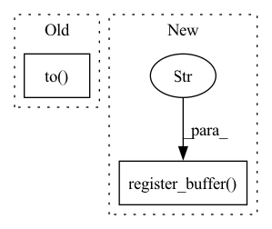

Pattern ID :11162
Before Change
self.metric_val = RDMetric()
self.metric_test = RDMetric()
// --- load the model to device --- //
self.to( device) // always make sure to do this.
def forward(self, X: torch.Tensor) -> torch.Tensor:
After Change
// -- the only neural network we need -- //
self.bert_mlm = bert_mlm
// -- to be used to compute S_wisdom -- //
self.register_buffer("wisdom2subwords" , wisdom2subwords) // (|W|, K)
// --- to be used for getting H_k --- //
self.wisdom_mask: Optional[torch.Tensor] = None // (N, L)
// --- to be used for getting H_desc --- //In pattern: SUPERPATTERN
Frequency: 3
Non-data size: 2
Instances Fragment ID: 38216919
Project Name: eubinecto/wisdomify
Commit Name: fb77135cadc0232f913481c8ddae571b1721849b
Time: 2021-11-19
Author: tlrndk123@gmail.com
File Name: wisdomify/models.py
M Class Name: RD
N Class Name: RD
M Method Name: __init__(6)
N Method Name: __init__(6)
M Parent Class: pl.LightningModule
N Parent Class: pl.LightningModule
M File Name: wisdomify/models.py
N File Name: wisdomify/models.py
M Start Line: 49
M End Line: 60
N Start Line: 49
N End Line: 49
Before Change
else:
// Normalization is disabled here. self.norm is only formally
// initialized to avoid jit issues.
self.norm = torch.nn.LayerNorm(2 * self.hidden_size).to( device)
self.normalize = True
// Initial state
self.h_init = torch.zeros(After Change
self.normalize = True
// Initial state
self.register_buffer("h_init" , torch.zeros(1, self.hidden_size))
// self.h_init = torch.zeros(1, self.hidden_size, requires_grad=False)
// Preloading dropout masks (gives some speed improvement)
self._init_drop(self.batch_size) Fragment ID: 38216918
Project Name: speechbrain/speechbrain
Commit Name: 6652d233126dc69e553d1be04d77dfb2a5741715
Time: 2020-09-23
Author: mirco.ravanelli@gmail.com
File Name: speechbrain/nnet/RNN.py
M Class Name: LiGRU_Layer
N Class Name: LiGRU_Layer
M Method Name: __init__(9)
N Method Name: __init__(10)
M Parent Class: torch.nn.Module
N Parent Class: torch.jit.ScriptModule
M File Name: speechbrain/nnet/RNN.py
N File Name: speechbrain/nnet/RNN.py
M Start Line: 1223
M End Line: 1282
N Start Line: 1075
N End Line: 1122
Before Change
Initializes the recurrent dropout operation. To speed it up,
the dropout masks are sampled in advance.
self.drop = torch.nn.Dropout(p=self.dropout, inplace=False).to(
self.device
)
self.drop_mask_te = torch.tensor([1.0], device=self.device).float()
self.N_drop_masks = 16000
self.drop_mask_cnt = 0After Change
self.N_drop_masks = 16000
self.drop_mask_cnt = 0
self.register_buffer(
"drop_masks" ,
self.drop(torch.ones(self.N_drop_masks, self.hidden_size)).data,
)
def _sample_drop_mask(self, w):
Selects one of the pre-defined dropout masks
if self.training: Fragment ID: 38216927
Project Name: speechbrain/speechbrain
Commit Name: 6652d233126dc69e553d1be04d77dfb2a5741715
Time: 2020-09-23
Author: mirco.ravanelli@gmail.com
File Name: speechbrain/nnet/RNN.py
M Class Name: LiGRU_Layer
N Class Name: LiGRU_Layer
M Method Name: _init_drop(2)
N Method Name: _init_drop(2)
M Parent Class: torch.nn.Module
N Parent Class: torch.jit.ScriptModule
M File Name: speechbrain/nnet/RNN.py
N File Name: speechbrain/nnet/RNN.py
M Start Line: 1352
M End Line: 1362
N Start Line: 1190
N End Line: 1199